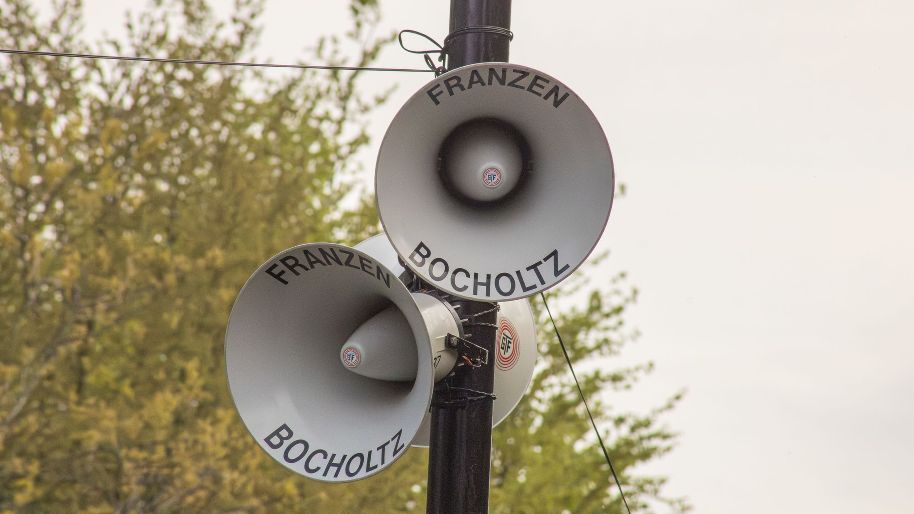

GTF Franzen / 100-Volt-ELA-Anlagen
Durchsagen, die
überall ankommen.
100-Volt-ELA-Anlagen mieten · Aufbau und Betreuung aus einer Hand
CH 01100-Volt-ELA-Anlagen
GTF Franzen aus Bocholtz (Niederlande, direkt an der Grenze bei Aachen) vermietet 100-Volt-ELA-Anlagen für Veranstaltungen. Wir haben über 300 eigene Druckkammerlautsprecher (Hornlautsprecher), überwiegend von Philips, dazu 100-Volt-Verstärker, Mikrofone, Verkabelung und Masten. Wir planen die Anlage, bauen sie auf, betreuen sie auf Wunsch während der Veranstaltung und bauen wieder ab. Wir sind in Deutschland, den Niederlanden und Belgien im Einsatz.
Beschallung über große Flächen und lange Strecken ist seit Generationen unser Markenzeichen. Man erkennt uns an den Hörnern mit der Aufschrift FRANZEN BOCHOLTZ. Entlang der Strecke des Amstel Gold Race sorgen sie dafür, dass das Publikum hört, was im Rennen passiert.
Das bekommen Sie
- 100-Volt-ELA-Anlagen zur Miete, aus eigenem Bestand
- Beschallung über große Entfernungen
- Hornlautsprecher an Masten, Pfählen und Gebäuden
- Mobile Beschallung für Umzüge und Radrennen
- Mikrofone für Sprecher und Moderation
- Planung, Aufbau und Betreuung vor Ort
CH 02Warum 100 Volt?
Lange Kabelwege
Mit einer 100-Volt-Anlage schließen Sie viele Lautsprecher über lange Leitungen an einen Verstärker an, ohne dass der Ton wegbricht.
Gut verständlich
Wir planen vorab, wo das Publikum steht und wo die Hörner hängen. So ist der Sprecher überall gut zu verstehen, ohne dass es an einer Stelle zu laut ist.
Zuverlässig
Robuste Technik, die bei Wind, Regen und tausenden Besuchern einfach funktioniert.
?Häufige Fragen
Kann ich bei Ihnen eine 100-Volt-ELA-Anlage mieten?
Ja. Wir vermieten komplette 100-Volt-ELA-Anlagen aus eigenem Bestand: Hornlautsprecher, 100-Volt-Verstärker, Mikrofone, Kabel und Masten. In der Regel bauen wir selbst auf, damit sicher alles funktioniert.
Was ist eine 100-Volt-ELA-Anlage?
Eine elektroakustische Anlage, bei der viele Lautsprecher über lange Kabel an einem Verstärker hängen. Sie ist zuverlässig und ideal für große Gelände, Strecken und Gebäude.
Kommen Sie auch nach Deutschland?
Ja. Bocholtz liegt direkt an der Grenze, wenige Minuten von Aachen. Wir arbeiten regelmäßig in Deutschland, den Niederlanden und Belgien.
Was kostet die Miete einer 100-Volt-Anlage?
Das hängt von der Anzahl der Lautsprecher, den Entfernungen und der Mietdauer ab. Sie erhalten immer ein unverbindliches Angebot.
Erzählen Sie uns von
Ihrer Veranstaltung.
Eine kurze Nachricht genügt. Wir antworten gern auf Deutsch und schicken Ihnen ein unverbindliches Angebot.